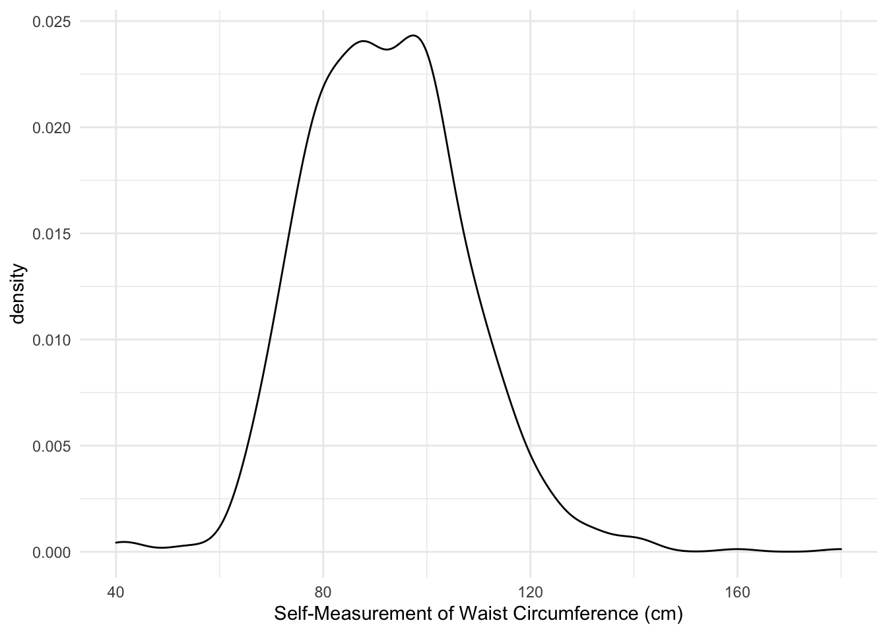
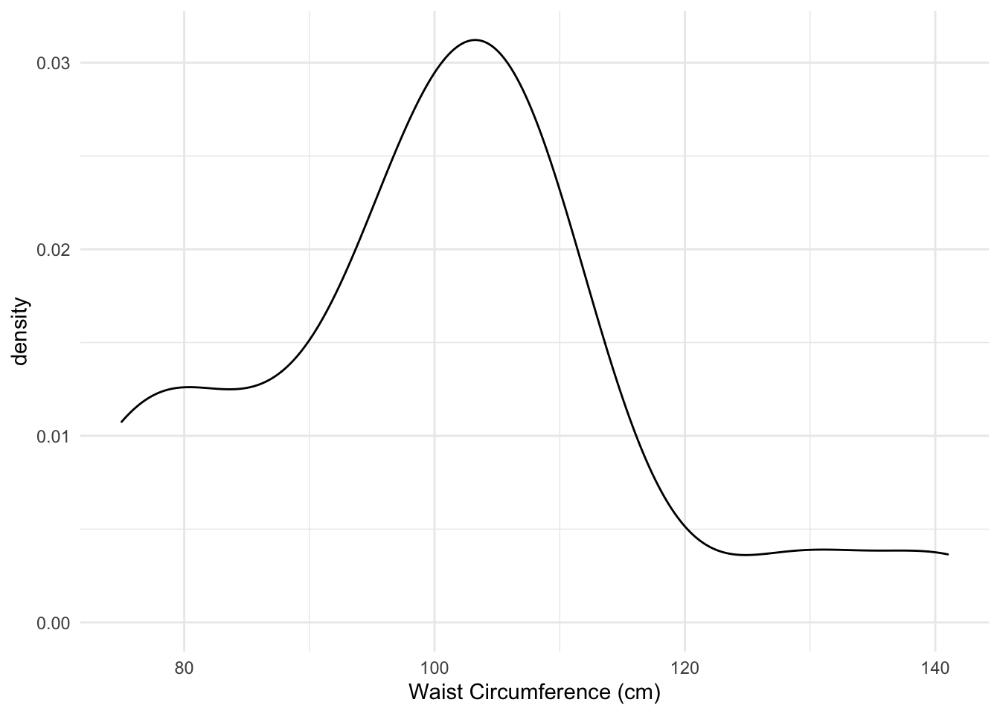
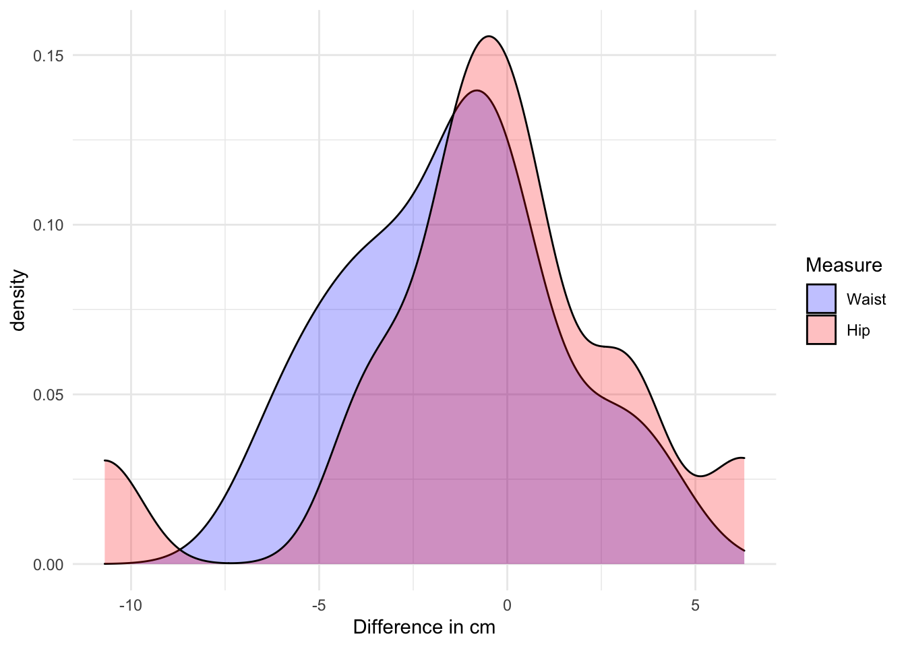
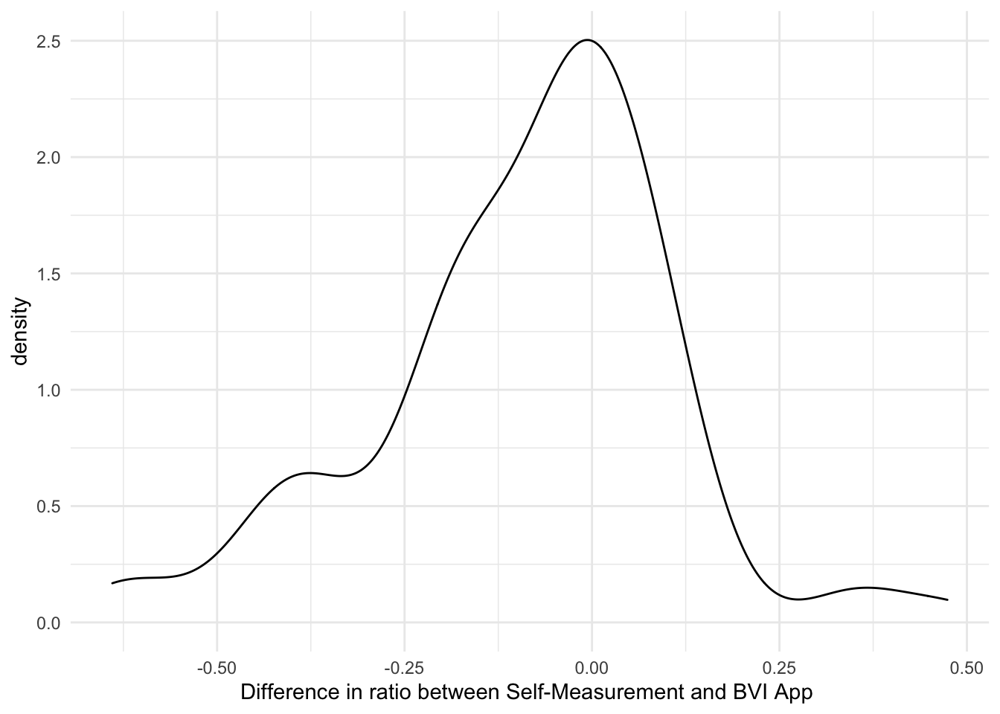
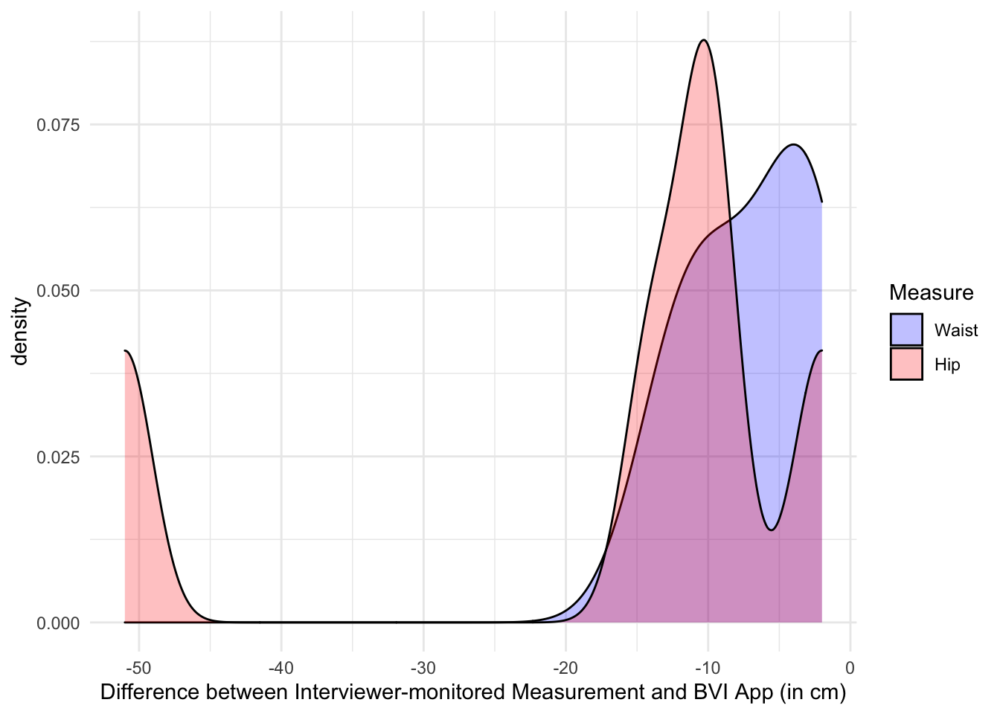
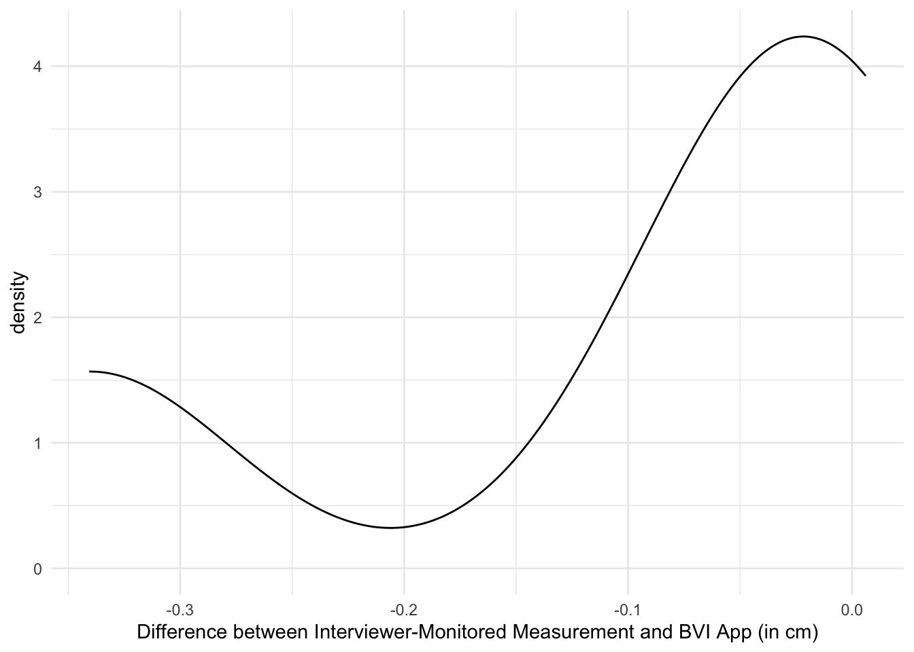

Code
library(tidyverse)
library(magrittr)
library(kableExtra)
options(knitr.kable.NA = '')
library(gt)
library(gtExtras)
library(gtsummary)
library(vtable)
library(DataExplorer)
library(psych)library(tidyverse)
library(magrittr)
library(kableExtra)
options(knitr.kable.NA = '')
library(gt)
library(gtExtras)
library(gtsummary)
library(vtable)
library(DataExplorer)
library(psych)bvi.data <- rio::import("//isersdata/SDATA/IP15/BVIAPP/EULdata/o_bviapp_ip.dta")
ip15.data <- rio::import("Z:/qc/ip/wave15/ip150101/stata/o_person.dta")Respondents were sent a letter with a tape measure included and asked to measure their waist and hips. What proportion of respondents was able to measure your waist and hips?
# alternative "tbl_summary"
tab1 <- ip15.data %>% as_tibble() %>% filter(o_slfwaistintro!=-8) %>%
pull(o_slfwaistintro) %>% summarytools::freq(., totals=T, report.nas=F) %>%
as_tibble() %>% filter(!row_number() %in% c(7)) %>% select(-c(2,3)) %>% as.matrix()
row.names(tab1) <- c(names(attr(ip15.data$o_slfwaistintro, "labels")[-c(1,2)]), "Total")
# alternative "tbl_summary"tab1 %>% kable(., digits=1) %>% kable_material(c("striped", "hover")) %>% kable_styling(.)| Freq | % Total | % Total Cum. | |
|---|---|---|---|
| Refused | 42 | 2.5 | 2.5 |
| Dont know | 21 | 1.2 | 3.7 |
| Yes both waist and hips | 908 | 54.0 | 57.7 |
| Yes, only waist | 38 | 2.3 | 60.0 |
| Yes, only hips | 4 | 0.2 | 60.2 |
| No | 670 | 39.8 | 100.0 |
| Total | 1683 | 100.0 | 100.0 |
ip15.data %>% filter(o_slfwaistintro==1 | o_slfwaistintro==2) %>% select(pidp, o_slfwaistcm) %>%
filter(o_slfwaistcm>0) %>%
vtable::sumtable(., vars="o_slfwaistcm", out='return', add.median = T,
labels=c("Waist circumference (cm)")) %>%
kable(., digits=1, col.names=c("", "N", "Mean", "Std. Dev.", "Min", "Pctl. 25", "Median", "Pctl. 75", "Max")) %>%
kable_material(c("striped", "hover")) %>% kable_styling(., full_width = F)| N | Mean | Std. Dev. | Min | Pctl. 25 | Median | Pctl. 75 | Max | |
|---|---|---|---|---|---|---|---|---|
| Waist circumference (cm) | 879 | 92.274 | 15.432 | 40 | 81 | 91 | 102 | 180 |
ip15.data %>% filter(o_slfwaistintro==1 | o_slfwaistintro==2) %>% select(pidp, o_slfwaistcm) %>%
filter(o_slfwaistcm>0) %>%
ggplot(., aes(o_slfwaistcm)) +
geom_density() +
xlab("Self-Measurement of Waist Circumference (cm)") +
theme_minimal() 
Breakdown of self-measurements of waist circumference by sex.
ip15.data %>% filter(o_slfwaistintro==1 | o_slfwaistintro==2) %>% select(pidp, o_slfwaistcm, o_psex) %>%
filter(o_slfwaistcm>0) %>% mutate(o_psex=factor(o_psex, levels=c(1, 2), labels = c("Male", "Female"))) %>%
vtable::sumtable(., group="o_psex", group.long = T ,vars="o_slfwaistcm", out='return', add.median = T,
labels=c("Waist circumference (cm)")) %>% mutate(Variable = c("", "Male", "", "", "Female")) %>%
filter(Variable!="") %>%
kable(., digits=1, col.names=c("", "N", "Mean", "Std. Dev.", "Min", "Pctl. 25", "Median", "Pctl. 75", "Max")) %>%
kable_material(c("striped", "hover")) %>% kable_styling(., full_width = F)| N | Mean | Std. Dev. | Min | Pctl. 25 | Median | Pctl. 75 | Max | |
|---|---|---|---|---|---|---|---|---|
| Male | 409 | 98.046 | 14.082 | 40 | 89 | 98 | 106 | 160 |
| Female | 470 | 87.251 | 14.798 | 43 | 77 | 85 | 96 | 180 |
ip15.data %>% filter(o_slfwaistintro==1 | o_slfwaistintro==2) %>% select(pidp, o_slfwaistcm, o_psex) %>%
filter(o_psex > 0) %>% filter(o_slfwaistcm>0) %>%
ggplot(., aes(o_slfwaistcm, group=as.character(o_psex), fill=as.character(o_psex))) +
geom_density(alpha=0.25) + guides(fill=guide_legend("Sex")) +
scale_fill_manual(labels = c("Male", "Female"), values = c("blue", "red")) +
xlab("Self-Measurement of Waist Circumference (cm)") +
theme_minimal()
ip15.data %>% filter(o_slfwaistintro==1 | o_slfwaistintro==3) %>% select(pidp, o_slfhipcm) %>%
filter(o_slfhipcm>0) %>%
vtable::sumtable(., vars="o_slfhipcm", out='return', add.median = T,
labels=c("Hip circumference (cm)")) %>%
kable(., digits=1, caption = "Table 8. Self-measurement of hip circumference (cm) [CAPI+CAWI respondents]",
col.names=c("", "N", "Mean", "Std. Dev.", "Min", "Pctl. 25", "Median", "Pctl. 75", "Max")) %>%
kable_material(c("striped", "hover")) %>% kable_styling(., full_width = F)| N | Mean | Std. Dev. | Min | Pctl. 25 | Median | Pctl. 75 | Max | |
|---|---|---|---|---|---|---|---|---|
| Hip circumference (cm) | 850 | 101.987 | 12.416 | 50 | 95 | 101 | 108 | 148 |
ip15.data %>% filter(o_slfwaistintro==1 | o_slfwaistintro==3) %>% select(pidp, o_slfhipcm) %>%
filter(o_slfhipcm>0) %>%
ggplot(., aes(o_slfhipcm)) +
geom_density() +
xlab("Self-Measurement of Hip Circumference (cm)")
ip15.data %>% filter(o_slfwaistintro==1 | o_slfwaistintro==3) %>% select(pidp, o_slfhipcm, o_psex) %>%
filter(o_slfhipcm>0) %>% mutate(o_psex=factor(o_psex, levels=c(1, 2), labels = c("Male", "Female"))) %>%
vtable::sumtable(., group="o_psex", group.long = T ,vars="o_slfhipcm", out='return', add.median = T,
labels=c("Hip circumference (cm)")) %>% mutate(Variable = c("", "Male", "", "", "Female")) %>%
filter(Variable!="") %>%
kable(., digits=1, col.names=c("", "N", "Mean", "Std. Dev.", "Min", "Pctl. 25", "Median", "Pctl. 75", "Max")) %>%
kable_material(c("striped", "hover")) %>% kable_styling(., full_width = F)| N | Mean | Std. Dev. | Min | Pctl. 25 | Median | Pctl. 75 | Max | |
|---|---|---|---|---|---|---|---|---|
| Male | 381 | 101.816 | 11.089 | 50 | 96 | 102 | 107 | 148 |
| Female | 469 | 102.126 | 13.408 | 52 | 94 | 100 | 110 | 147 |
ip15.data %>% filter(o_slfwaistintro==1 | o_slfwaistintro==3) %>% select(pidp, o_slfhipcm, o_psex) %>%
filter(o_psex > 0) %>% filter(o_slfhipcm>0) %>%
ggplot(., aes(o_slfhipcm, group=as.character(o_psex), fill=as.character(o_psex))) +
geom_density(alpha=0.25) + guides(fill=guide_legend("Sex")) +
scale_fill_manual(labels = c("Male", "Female"), values = c("blue", "red")) +
xlab("Self-Measurement of Hip Circumference (cm)") +
ggtitle("Density plot of self-measured hip circumference by sex (cm)")
wh <- ip15.data %>% filter(o_slfwaistintro==1 | o_slfwaistintro==2) %>% select(pidp, o_slfwaistcm, o_slfhipcm) %>%
filter(o_slfwaistcm>0 & o_slfhipcm>0) %>% select(pidp, o_slfwaistcm) %>% mutate(Measure = "Waist") %>%
rename(measurement = o_slfwaistcm) %>% select(pidp, measurement, Measure)
temp <- ip15.data %>% filter(o_slfwaistintro==1 | o_slfwaistintro==2) %>% select(pidp, o_slfwaistcm, o_slfhipcm) %>%
filter(o_slfwaistcm>0 & o_slfhipcm>0) %>% select(pidp, o_slfhipcm) %>% mutate(Measure="Hip") %>%
rename(measurement = o_slfhipcm) %>% select(pidp, measurement, Measure)
wh <- bind_rows(wh, temp)
wh %>%
ggplot(., aes(x=measurement, fill=Measure)) +
geom_density(alpha=0.5) +
xlab("Self-Measured Circumference (cm+mm)") +
theme_minimal()
ip15.data %>% filter(o_slfwaistintro==1) %>% select(pidp, o_slfwaistcm, o_slfhipcm) %>%
filter(o_slfwaistcm>0 & o_slfhipcm>0) %>% mutate(o_whratiocm = o_slfwaistcm/o_slfhipcm) %>%
vtable::sumtable(., vars="o_whratiocm", out='return', add.median = T,
labels=c("Waist to Hip ratio (cm)")) %>%
kable(., digits=1, col.names=c("", "N", "Mean", "Std. Dev.", "Min", "Pctl. 25", "Median", "Pctl. 75", "Max")) %>%
kable_material(c("striped", "hover")) %>% kable_styling(., full_width = F)| N | Mean | Std. Dev. | Min | Pctl. 25 | Median | Pctl. 75 | Max | |
|---|---|---|---|---|---|---|---|---|
| Waist to Hip ratio (cm) | 845 | 0.903 | 0.101 | 0.52 | 0.83 | 0.904 | 0.968 | 1.517 |
Breakdown by sex
ip15.data %>% filter(o_slfwaistintro==1) %>% select(pidp, o_slfwaistcm, o_slfhipcm, o_psex) %>%
filter(o_slfwaistcm>0 & o_slfhipcm>0) %>% mutate(o_whratiocm = o_slfwaistcm/o_slfhipcm) %>%
ggplot(., aes(x=o_whratiocm, group=as.character(o_psex), fill=as.character(o_psex))) +
geom_density(alpha=0.25) + guides(fill=guide_legend("Sex")) +
scale_fill_manual(labels = c("Male", "Female"), values = c("blue", "red")) +
xlab("Waist to Hip Ratio") +
theme_minimal()
tab2 <- ip15.data %>% filter(o_indmode==1) %>% filter(o_whagreement!=-8) %>% pull(o_whagreement) %>% summarytools::freq(., totals=T, report.nas=F) %>%
as_tibble() %>% filter(!row_number() %in% c(3)) %>% select(-c(2,3)) %>% as.matrix()
row.names(tab2) <- c(names(attr(ip15.data$o_slfwaistintro, "labels")[c(5,8)]), "Total")
## Contingency table (self-measurement & self-measurement w/ interviewer)
tab3 <- table(ip15.data$o_slfwaistintro, ip15.data$o_whagreement)
row.names(tab3) <- names(attr(ip15.data$o_slfwaistintro, "labels"))[-1]
colnames(tab3) <- c("Inapplicable", "Yes, both waist and hips", "No")tab2 %>% kable(., digits=1, format = ) %>% kable_material(c("striped", "hover")) %>% kable_styling(.)| Freq | % Total | % Total Cum. | |
|---|---|---|---|
| Yes both waist and hips | 21 | 95.5 | 95.5 |
| No | 1 | 4.5 | 100.0 |
| Total | 22 | 100.0 | 100.0 |
tab3 %>% addmargins %>% kable(., digits=1, format = ) %>% kable_material(c("striped", "hover")) %>% kable_styling(.) %>% column_spec(1, bold = TRUE)| Inapplicable | Yes, both waist and hips | No | Sum | |
|---|---|---|---|---|
| Inapplicable | 11 | 0 | 0 | 11 |
| Refused | 42 | 0 | 0 | 42 |
| Dont know | 21 | 0 | 0 | 21 |
| Yes both waist and hips | 893 | 14 | 1 | 908 |
| Yes, only waist | 38 | 0 | 0 | 38 |
| Yes, only hips | 4 | 0 | 0 | 4 |
| No | 663 | 7 | 0 | 670 |
| Sum | 1672 | 21 | 1 | 1694 |
# Waist
waist.measurements <- tibble(pidp = ip15.data %>% filter(o_indmode==1) %>% filter(o_whagreement!=-8 & o_whagreement != 4) %>% pull(pidp),
measurements = 2)
waist3 <- ip15.data %>% filter(o_indmode==1) %>% filter(o_whagreement!=-8) %>% filter(o_waist3!=-8) %>% pull(pidp)
waist.measurements$measurements[waist.measurements$pidp==waist3] <- 3
waist3_diff <- ip15.data %>% filter(pidp==waist3) %>% select(o_waist1, o_waist2, o_waist3) %>%
mutate(diff12 = o_waist1-o_waist2,
diff23 = o_waist2-o_waist3,
diff13 = o_waist1-o_waist3)
# Hip
hip.measurements <- tibble(pidp = ip15.data %>% filter(o_indmode==1) %>% filter(o_whagreement!=-8 & o_whagreement != 4) %>% pull(pidp),
measurements = 2)
hip3 <- ip15.data %>% filter(o_indmode==1) %>% filter(o_whagreement!=-8) %>% filter(o_hip3!=-8) %>% pull(pidp) # empty
## Correlation between both measurements
corr <- ip15.data %>% filter(o_indmode==1) %>% select(pidp, o_waist1, o_waist2, o_waist3) %>% filter(o_waist1 > 0 & o_waist2 > 0)Of the 21 respondents who agreed to measure there waist and hips with the interviewer, only 1 needed to take a third measurement of their waist due to a discrepancy between measure #1 and measure #2.
In this case, the difference between the first and second measurement was equal to -3.8, the difference between second and third was equal to 3.8, and the difference between the first and third measurements was equal to 0.
Overall, the correlation between the first and second measurements in cm+mm is 0.9975565. Out of the 21 respondents, none had to repeat their hip measurement a third time.
ip15.data %>% filter(o_indmode==1) %>% filter(o_whagreement!=-8 & o_whagreement != 4) %>% select(pidp, o_waist1cm) %>%
filter(o_waist1cm>0) %>% vtable::sumtable(., vars="o_waist1cm", out='return', add.median = T,
labels=c("Waist circumference (cm)")) %>%
kable(., digits=1, col.names=c("", "N", "Mean", "Std. Dev.", "Min", "Pctl. 25", "Median", "Pctl. 75", "Max")) %>%
kable_material(c("striped", "hover")) %>% kable_styling(., full_width = F)| N | Mean | Std. Dev. | Min | Pctl. 25 | Median | Pctl. 75 | Max | |
|---|---|---|---|---|---|---|---|---|
| Waist circumference (cm) | 21 | 100.667 | 16.2 | 75 | 92 | 101 | 108 | 141 |
ip15.data %>% filter(o_indmode==1) %>% filter(o_whagreement!=-8 & o_whagreement != 4) %>% select(pidp, o_waist1cm) %>%
filter(o_waist1cm>0) %>%
ggplot(., aes(o_waist1cm)) +
geom_density() +
xlab("Waist Circumference (cm)") +
theme_minimal()
Breakdown by sex.
ip15.data %>% filter(o_indmode==1) %>% filter(o_whagreement!=-8 & o_whagreement != 4) %>% select(pidp, o_waist1cm, o_psex) %>%
filter(o_waist1cm>0) %>% mutate(o_psex=factor(o_psex, levels=c(1, 2), labels = c("Male", "Female"))) %>%
vtable::sumtable(., group="o_psex", group.long = T ,vars="o_waist1cm", out='return', add.median = T,
labels=c("Waist circumference (cm)")) %>% mutate(Variable = c("", "Male", "", "", "Female")) %>%
filter(Variable!="") %>% kable(., digits=1,
col.names=c("", "N", "Mean", "Std. Dev.", "Min", "Pctl. 25", "Median", "Pctl. 75", "Max")) %>%
kable_material(c("striped", "hover")) %>% kable_styling(., full_width = F)| N | Mean | Std. Dev. | Min | Pctl. 25 | Median | Pctl. 75 | Max | |
|---|---|---|---|---|---|---|---|---|
| Male | 11 | 106.364 | 13.699 | 87 | 100 | 106 | 108 | 141 |
| Female | 10 | 94.4 | 17.07 | 75 | 79.5 | 95 | 104.25 | 129 |
## Density Plot by sex
#| Label: #fig-fig8
#| fig-cap: "Figure 8. Density plot of self-measured waist circumference (cm+mm) monitored by interviewer, by sex [N=14]"
ip15.data %>% filter(o_indmode==1) %>% filter(o_whagreement!=-8 & o_whagreement != 4) %>% select(pidp, o_waist1cm, o_psex) %>%
filter(o_psex > 0) %>% filter(o_waist1cm>0) %>%
ggplot(., aes(o_waist1cm, group=as.character(o_psex), fill=as.character(o_psex))) +
geom_density(alpha=0.25) + guides(fill=guide_legend("Sex")) +
scale_fill_manual(labels = c("Male", "Female"), values = c("blue", "red")) +
xlab("Waist Circumference (cm)") +
theme_minimal() 
ip15.data %>% filter(o_indmode==1) %>% filter(o_whagreement!=-8 & o_whagreement != 4) %>% select(pidp, o_hip1cm) %>%
filter(o_hip1cm>0) %>%
vtable::sumtable(., vars="o_hip1cm", out='return', add.median = T,
labels=c("Hip circumference (cm)")) %>%
kable(., digits=1, col.names=c("", "N", "Mean", "Std. Dev.", "Min", "Pctl. 25", "Median", "Pctl. 75", "Max")) %>%
kable_material(c("striped", "hover")) %>% kable_styling(., full_width = F)| N | Mean | Std. Dev. | Min | Pctl. 25 | Median | Pctl. 75 | Max | |
|---|---|---|---|---|---|---|---|---|
| Hip circumference (cm) | 21 | 110.19 | 16.363 | 92 | 101 | 106 | 115 | 162 |
## Density Plot
#| Label: #fig-fig9
#| fig-cap: "Figure 9. Density plot of self-measured hip circumference (cm) monitored by interviewer [N=14]"
ip15.data %>% filter(o_indmode==1) %>% filter(o_whagreement!=-8 & o_whagreement != 4) %>% select(pidp, o_hip1cm) %>%
filter(o_hip1cm>0) %>%
ggplot(., aes(o_hip1cm)) +
geom_density() +
xlab("Hip Circumference (cm+mm)") +
theme_minimal()
ip15.data %>% filter(o_indmode==1) %>% filter(o_whagreement!=-8 & o_whagreement != 4) %>% select(pidp, o_hip1cm, o_psex) %>%
filter(o_hip1cm>0) %>% mutate(o_psex=factor(o_psex, levels=c(1, 2), labels = c("Male", "Female"))) %>%
vtable::sumtable(., group="o_psex", group.long = T ,vars="o_hip1cm", out='return', add.median = T,
labels=c("Hip circumference (cm)")) %>% mutate(Variable = c("", "Male", "", "", "Female")) %>%
filter(Variable!="") %>% kable(., digits=1,
col.names=c("", "N", "Mean", "Std. Dev.", "Min", "Pctl. 25", "Median", "Pctl. 75", "Max")) %>%
kable_material(c("striped", "hover")) %>% kable_styling(., full_width = F)| N | Mean | Std. Dev. | Min | Pctl. 25 | Median | Pctl. 75 | Max | |
|---|---|---|---|---|---|---|---|---|
| Male | 11 | 110.636 | 12.077 | 100 | 104 | 108 | 112 | 143 |
| Female | 10 | 109.7 | 20.796 | 92 | 97.25 | 102.5 | 115 | 162 |
ip15.data %>% filter(o_indmode==1) %>% filter(o_whagreement!=-8 & o_whagreement != 4) %>% select(pidp, o_hip1cm, o_psex) %>%
filter(o_psex > 0) %>% filter(o_hip1cm>0) %>%
ggplot(., aes(o_hip1cm, group=as.character(o_psex), fill=as.character(o_psex))) +
geom_density(alpha=0.25) + guides(fill=guide_legend("Sex")) +
scale_fill_manual(labels = c("Male", "Female"), values = c("blue", "red")) +
xlab("Hip Circumference (cm)") +
theme_minimal()
ip15.data %>% filter(o_indmode==1) %>% filter(o_whagreement!=-8 & o_whagreement != 4) %>% select(pidp, o_waist1cm, o_hip1) %>%
filter(o_waist1cm>0 & o_hip1>0) %>% mutate(o_whratiocm = o_waist1cm/o_hip1) %>%
vtable::sumtable(., vars="o_whratiocm", out='return', add.median = T,
labels=c("Waist/Hip ratio")) %>%
kable(., digits=1, col.names=c("", "N", "Mean", "Std. Dev.", "Min", "Pctl. 25", "Median", "Pctl. 75", "Max")) %>%
kable_material(c("striped", "hover")) %>% kable_styling(., full_width = F)| N | Mean | Std. Dev. | Min | Pctl. 25 | Median | Pctl. 75 | Max | |
|---|---|---|---|---|---|---|---|---|
| Waist/Hip ratio | 21 | 0.912 | 0.071 | 0.772 | 0.859 | 0.936 | 0.965 | 1 |
ip15.data %>% filter(o_indmode==1) %>% filter(o_whagreement!=-8 & o_whagreement != 4) %>% select(pidp, o_waist1, o_hip1) %>%
filter(o_waist1>0 & o_hip1>0) %>% mutate(o_whratiocm = o_waist1/o_hip1) %>%
ggplot(., aes(o_whratiocm)) +
geom_density() +
xlab("Waist to Hip Ratio (cm)") +
theme_minimal()
ip15.data %>% filter(o_indmode==1) %>% filter(o_whagreement!=-8 & o_whagreement != 4) %>% select(pidp, o_waist1cm, o_hip1cm, o_psex) %>%
filter(o_waist1cm>0 & o_hip1cm>0) %>% mutate(o_whratiocm = o_waist1cm/o_hip1cm) %>%
ggplot(., aes(x=o_whratiocm, group=as.character(o_psex), fill=as.character(o_psex))) +
geom_density(alpha=0.25) + guides(fill=guide_legend("Sex")) +
scale_fill_manual(labels = c("Male", "Female"), values = c("blue", "red")) +
xlab("Waist to Hip Ratio (cm)") +
theme_minimal()
bvi.stats <- ip15.data %>% select(pidp, o_bviappoutc1, o_bviappoutc2, o_psex, o_pdvage, o_indmode) %>% mutate(bvi_use = o_bviappoutc1)
bvi.stats$bvi_use[bvi.stats$o_indmode==1] <- bvi.stats$o_bviappoutc2[bvi.stats$o_indmode==1]
bvi.stats$bvi_use[bvi.stats$o_indmode==3 & bvi.stats$o_bviappoutc1==-8] <- bvi.stats$o_bviappoutc2[bvi.stats$o_indmode==3 & bvi.stats$o_bviappoutc1==-8]
bvi.stats$bvi_use[bvi.stats$bvi_use==3] <- bvi.stats$o_bviappoutc2[bvi.stats$bvi_use==3]
bvi.table <- bvi.stats %>% filter(bvi_use!=-8) %>% as_tibble() %>% pull(bvi_use) %>% summarytools::freq(., totals=T, report.nas=F) %>% as_tibble() %>% filter(!row_number() %in% c(8)) %>% select(-c(2,3)) %>% as.matrix()
row.names(bvi.table) <- c(names(attr(bvi.stats$o_bviappoutc2, "labels")[-c(1,2)]), "Total")
bvi.table %>% kable(., digits=1) %>% kable_material(c("striped", "hover")) %>% kable_styling(.)| Freq | % Total | % Total Cum. | |
|---|---|---|---|
| Refused | 7 | 0.4 | 0.4 |
| Dont know | 3 | 0.2 | 0.6 |
| Yes, I have installed it and logged in successfully | 497 | 31.8 | 32.4 |
| No, I have installed it but was not able to log in | 47 | 3.0 | 35.4 |
| No, I tried but it did not work | 99 | 6.3 | 41.7 |
| No, I have not yet tried to install it | 94 | 6.0 | 47.7 |
| No, I do not want to install it | 818 | 52.3 | 100.0 |
| Total | 1565 | 100.0 | 100.0 |
Why did respondents refuse to install the app?
bvinot <- data.frame(n=c(as.numeric(table(ip15.data$o_bvinotwhy1)[4]), as.numeric(table(ip15.data$o_bvinotwhy2)[4]), as.numeric(table(ip15.data$o_bvinotwhy3)[4]),
as.numeric(table(ip15.data$o_bvinotwhy4)[4]), as.numeric(table(ip15.data$o_bvinotwhy5)[4]), as.numeric(table(ip15.data$o_bvinotwhy6)[4]),
as.numeric(table(ip15.data$o_bvinotwhy7)[4]), as.numeric(table(ip15.data$o_bvinotwhy8)[4]), as.numeric(table(ip15.data$o_bvinotwhy9)[4]),
as.numeric(table(ip15.data$o_bvinotwhy97)[4])))
bvinot$pct = (bvinot$n/849)*100
row.names(bvinot) <- c("No internet access",
"No smartphone or tablet which can download apps","Not able or confident to download apps onto my smartphone or tablet",
"Not confident that information would be held securely","Do not want to take up storage space on my smartphone or tablet",
"Not willing to share this kind of information","Not interested in answering additional questions on this topic",
"Do not have time to take part", "I don't want to participate in additional survey tasks", "Other reason")
colnames(bvinot) <- c("Freq", "% Total")
bvinot %>% kable(., digits=1) %>% kable_material(c("striped", "hover")) %>%
kable_styling(., full_width = F)| Freq | % Total | |
|---|---|---|
| No internet access | 6 | 0.7 |
| No smartphone or tablet which can download apps | 39 | 4.6 |
| Not able or confident to download apps onto my smartphone or tablet | 67 | 7.9 |
| Not confident that information would be held securely | 52 | 6.1 |
| Do not want to take up storage space on my smartphone or tablet | 65 | 7.7 |
| Not willing to share this kind of information | 335 | 39.5 |
| Not interested in answering additional questions on this topic | 128 | 15.1 |
| Do not have time to take part | 73 | 8.6 |
| I don't want to participate in additional survey tasks | 150 | 17.7 |
| Other reason | 85 | 10.0 |
#| Label: #tbl-tab16
#| tbl-cap: "Table 16. BVI app waist measures"
bvi.data %>% select(o_wcirc, o_wstcircnrw, o_wstwho) %>%
mutate_at(vars(o_wcirc:o_wstwho), list(~recode(., `-9` = NA_real_))) %>%
profile_missing() %>% as_tibble() %>% rename(Measure = feature) %>%
mutate(Measure = as.character(Measure)) %>%
mutate(Measure = recode(Measure, `o_wcirc` = "Waist Circumference (cm)",
`o_wstcircnrw` = "Waist Circumference Narrowest Point (cm)",
`o_wstwho`= "Waist Circumference to WHO guidance (cm)")) %>%
mutate(pct_missing = pct_missing*100) %>%
rename("Freq Missing" = num_missing, "Pct Missing" = pct_missing) %>%
kable(., digits=1, caption = "Table 18. BVI app waist measures",) %>%
kable_material(c("striped", "hover")) %>% kable_styling(., full_width = F)| Measure | Freq Missing | Pct Missing |
|---|---|---|
| Waist Circumference (cm) | 0 | 0.0 |
| Waist Circumference Narrowest Point (cm) | 243 | 70.0 |
| Waist Circumference to WHO guidance (cm) | 240 | 69.2 |
corr.waist <- bvi.data %>% select(o_wcirc, o_wstcircnrw, o_wstwho) %>%
mutate_at(vars(o_wcirc:o_wstwho), list(~recode(., `-9` = NA_real_))) %>%
cor(., use="complete.obs") %>% as.matrix()
row.names(corr.waist) <- c("Waist Circ", "Waist Circ Narrow","Waist Circ WHO")
colnames(corr.waist) <- c("Waist Circ", "Waist Circ Narrow","Waist Circ WHO")
corr.waist[1,2:3] <- ""
corr.waist[2,3] <- ""
corr.waist %>% kable(., digits=1, caption = "Table 19. Correlation of BVI app waist measures",) %>%
kable_material(c("striped", "hover")) %>% kable_styling(., full_width = F)| Waist Circ | Waist Circ Narrow | Waist Circ WHO | |
|---|---|---|---|
| Waist Circ | 1 | ||
| Waist Circ Narrow | 0.543906200470262 | 1 | |
| Waist Circ WHO | 0.542040864412889 | 0.978908410929058 | 1 |
# Waist correlation visuals
pairs.panels(bvi.data %>% select(o_wcirc, o_wstcircnrw, o_wstwho) %>%
filter(o_wstcircnrw > 0 & o_wstwho > 0))
bvi.data %>% select(pidp, o_wcirc) %>% filter(o_wcirc>0) %>%
vtable::sumtable(., vars="o_wcirc", out='return', add.median = T,
labels=c("Waist circumference (cm)")) %>%
bind_rows(., bvi.data %>% select(pidp, o_wcirc) %>% filter(o_wcirc>0&o_wcirc<2000) %>%
vtable::sumtable(., vars="o_wcirc", out='return', add.median = T,
labels=c("Waist circumference (cm) [no outliers]"))) %>%
kable(., digits=1, col.names=c("", "N", "Mean", "Std. Dev.", "Min", "Pctl. 25", "Median", "Pctl. 75", "Max")) %>%
kable_material(c("striped", "hover")) %>% kable_styling(., full_width = F)| N | Mean | Std. Dev. | Min | Pctl. 25 | Median | Pctl. 75 | Max | |
|---|---|---|---|---|---|---|---|---|
| Waist circumference (cm) | 347 | 126.986 | 120.757 | 69 | 100.5 | 117 | 137 | 2292 |
| Waist circumference (cm) [no outliers] | 346 | 120.728 | 31.607 | 69 | 100.25 | 116.5 | 136.75 | 462 |
bvi.data %>% select(pidp, o_wcirc) %>% filter(o_wcirc>0) %>%
filter(o_wcirc<2000) %>% # Remove one outlier for whom waist circumference > 2000cm
ggplot(., aes(o_wcirc)) +
geom_density() +
xlab("Waist Circumference in cm") +
theme_minimal()
Breakdown by sex.
bvi.data %>% select(pidp, o_wcirc, o_sex) %>% filter(o_wcirc>0) %>% ## Remove outlier for whom o_wcirc>2000
mutate(o_sex=factor(o_sex, levels=c(1, 2), labels = c("Male", "Female"))) %>%
vtable::sumtable(., group="o_sex", group.long = T , vars="o_wcirc", out='return', add.median = T,
labels=c("Waist circumference (cm)")) %>%
bind_rows(., bvi.data %>% select(pidp, o_wcirc, o_sex) %>% filter(o_wcirc>0&o_wcirc<2000) %>% ## Remove outlier for whom o_wcirc>2000
mutate(o_sex=factor(o_sex, levels=c(1, 2), labels = c("Male", "Female"))) %>%
vtable::sumtable(., group="o_sex", group.long = T , vars="o_wcirc", out='return', add.median = T,
labels=c("Waist circumference (cm) [no outliers]"))) %>%
arrange(order(c(1,2,7,3,4,5,10,6,8,9))) %>% slice(-c(8:10)) %>%
kable(., digits=1, caption = "Table 21. BVI app waist circumference by sex [CAPI+CAWI respondents]",
col.names=c("", "N", "Mean", "Std. Dev.", "Min", "Pctl. 25", "Median", "Pctl. 75", "Max")) %>%
kable_material(c("striped", "hover")) %>% kable_styling(., full_width = F)| N | Mean | Std. Dev. | Min | Pctl. 25 | Median | Pctl. 75 | Max | |
|---|---|---|---|---|---|---|---|---|
| o_sex: Male | ||||||||
| Waist circumference (cm) | 164 | 138.61 | 173.347 | 79 | 102 | 120.5 | 140.25 | 2292 |
| Waist circumference (cm) [no outliers] | 163 | 125.399 | 37.883 | 79 | 102 | 120 | 140 | 462 |
| o_sex: Female | ||||||||
| Waist circumference (cm) | 183 | 116.568 | 24.069 | 69 | 99 | 115 | 132.5 | 195 |
| Waist circumference (cm) [no outliers] | 183 | 116.568 | 24.069 | 69 | 99 | 115 | 132.5 | 195 |
bvi.data %>% select(pidp, o_wcirc, o_sex) %>% filter(o_wcirc>0) %>%
filter(o_wcirc<2000) %>% # Remove one outlier for whom waist circumference > 2000cm
ggplot(., aes(o_wcirc, group=as.character(o_sex), fill=as.character(o_sex))) +
geom_density(alpha=0.25) + guides(fill=guide_legend("Sex")) +
scale_fill_manual(labels = c("Male", "Female"), values = c("blue", "red")) +
xlab("Waist Circumference in cm (1 outlier removed)") +
theme_minimal() +
ggtitle("Density plot of Waist circumference (cm), by sex, measured by BVI app")
bvi.data %>% select(o_circhipwho) %>%
mutate_at(vars(o_circhipwho), list(~recode(., `-9` = NA_real_))) %>%
profile_missing() %>% as_tibble() %>% rename(Measure = feature) %>%
mutate(Measure = as.character(Measure)) %>%
mutate(Measure = recode(Measure, `o_circhipwho`= "Hip Circumference to WHO guidance (cm)")) %>%
mutate(pct_missing = pct_missing*100) %>%
rename("Freq Missing" = num_missing, "Pct Missing" = pct_missing) %>%
kable(., digits=1, ) %>%
kable_material(c("striped", "hover")) %>% kable_styling(., full_width = F)| Measure | Freq Missing | Pct Missing |
|---|---|---|
| Hip Circumference to WHO guidance (cm) | 224 | 64.6 |
bvi.data %>% select(pidp, o_circhipwho) %>% filter(o_circhipwho>0) %>%
vtable::sumtable(., vars="o_circhipwho", out='return', add.median = T,
labels=c("Hip circumference (cm)")) %>%
kable(., digits=1, col.names=c("", "N", "Mean", "Std. Dev.", "Min", "Pctl. 25", "Median", "Pctl. 75", "Max")) %>%
kable_material(c("striped", "hover")) %>% kable_styling(., full_width = F)| N | Mean | Std. Dev. | Min | Pctl. 25 | Median | Pctl. 75 | Max | |
|---|---|---|---|---|---|---|---|---|
| Hip circumference (cm) | 123 | 108.043 | 15.459 | 75.209 | 97.561 | 105.385 | 116.675 | 185.75 |
bvi.data %>% select(pidp, o_circhipwho) %>% filter(o_circhipwho>0) %>%
ggplot(., aes(o_circhipwho)) +
geom_density() +
xlab("Waist Circumference in cm") +
theme_minimal()
bvi.data %>% select(pidp, o_circhipwho, o_sex) %>% filter(o_circhipwho>0) %>%
mutate(o_sex=factor(o_sex, levels=c(1, 2), labels = c("Male", "Female"))) %>%
vtable::sumtable(., group="o_sex", group.long = T , vars="o_circhipwho", out='return', add.median = T,
labels=c("Hip circumference (cm)")) %>%
kable(., digits=1, caption = "Table 21. BVI app hip circumference by sex [CAPI+CAWI respondents]",
col.names=c("", "N", "Mean", "Std. Dev.", "Min", "Pctl. 25", "Median", "Pctl. 75", "Max")) %>%
kable_material(c("striped", "hover")) %>% kable_styling(., full_width = F)| N | Mean | Std. Dev. | Min | Pctl. 25 | Median | Pctl. 75 | Max | |
|---|---|---|---|---|---|---|---|---|
| o_sex: Male | ||||||||
| Hip circumference (cm) | 57 | 109.34 | 17.491 | 84.023 | 98.476 | 105.588 | 116.688 | 185.75 |
| o_sex: Female | ||||||||
| Hip circumference (cm) | 66 | 106.922 | 13.498 | 75.209 | 97.168 | 104.521 | 115.9 | 138.328 |
bvi.data %>% select(pidp, o_circhipwho, o_sex) %>% filter(o_circhipwho>0) %>%
ggplot(., aes(o_circhipwho, group=as.character(o_sex), fill=as.character(o_sex))) +
geom_density(alpha=0.25) + guides(fill=guide_legend("Sex")) +
scale_fill_manual(labels = c("Male", "Female"), values = c("blue", "red")) +
xlab("Hip Circumference in cm") +
theme_minimal()
# Waist
slf.int.waist <- ip15.data %>% filter(o_indmode==1) %>% filter(o_slfwaistintro==1 | o_slfwaistintro==2) %>%
filter(o_whagreement==1) %>% filter(o_slfwaistcm>0 & o_waist1 > 0) %>%
select(pidp, o_slfwaistcm, o_waist1) %>% mutate(difference = o_slfwaistcm-o_waist1) %>% mutate(bias="none") %>%
mutate(bias=case_when(difference<0 ~ "Self-Measurement Underestimate",
difference>0 ~ "Self-Measurement Overestimate",
difference==0 ~ "Self-Measurement Correct")) %>%
mutate(measure = "Waist")
# Hip
slf.int.hip <- ip15.data %>% filter(o_indmode==1) %>% filter(o_slfwaistintro==1 | o_slfwaistintro==3) %>%
filter(o_whagreement==1) %>% filter(o_slfhipcm>0 & o_hip1 > 0) %>%
select(pidp, o_slfhipcm, o_hip1) %>% mutate(difference = o_slfhipcm-o_hip1) %>% mutate(bias="none") %>%
mutate(bias=case_when(difference<0 ~ "Self-Measurement Underestimate",
difference>0 ~ "Self-Measurement Overestimate",
difference==0 ~ "Self-Measurement Correct")) %>%
mutate(measure = "Hip")
# Waist-Hip Ratio
slf.int.whratio <- ip15.data %>% filter(o_indmode==1) %>% filter(o_slfwaistintro==1) %>% filter(o_whagreement==1) %>%
filter(o_slfwaistcm>0 & o_slfhipcm > 0 & o_waist1 > 0 & o_hip1 > 0) %>%
select(pidp, o_slfwaistcm, o_slfhipcm, o_waist1, o_hip1) %>% mutate(slfwhratio = o_slfwaistcm/o_slfhipcm,
intwhratio = o_waist1/o_hip1) %>%
mutate(difference = slfwhratio-intwhratio) %>% mutate(bias="none") %>%
mutate(bias=case_when(difference<0 ~ "Self-Measurement Underestimate",
difference>0 ~ "Self-Measurement Overestimate")) %>%
mutate(measure = "Waist/Hip Ratio")
Comparing circumference in cm between Waist and Hip self-measurements, with and without interviewer monitoring.
slf.int.waist %>% select(difference, bias) %>% mutate(difference=abs(difference)) %>%
vtable::sumtable(., vars=c("difference"), out='return', add.median = T,
labels=c("Difference in Waist Cicumference (cm)")) %>%
bind_rows(., slf.int.hip %>% select(difference, bias) %>% mutate(difference=abs(difference)) %>%
vtable::sumtable(., vars=c("difference"), out='return', add.median = T,
labels=c("Difference in Hip Cicumference (cm)"))) %>%
bind_rows(., slf.int.whratio %>% select(difference, bias) %>% mutate(difference=abs(difference)) %>%
vtable::sumtable(., vars=c("difference"), out='return', add.median = T,
labels=c("Difference in Waist/Hip Ratio"))) %>%
kable(., digits=1, col.names=c("", "N", "Mean", "Std. Dev.", "Min", "Pctl. 25", "Median", "Pctl. 75", "Max")) %>%
kable_material(c("striped", "hover")) %>% kable_styling(., full_width = F)| N | Mean | Std. Dev. | Min | Pctl. 25 | Median | Pctl. 75 | Max | |
|---|---|---|---|---|---|---|---|---|
| Difference in Waist Cicumference (cm) | 13 | 2.762 | 2.977 | 0.1 | 1 | 1.5 | 3.5 | 10.7 |
| Difference in Hip Cicumference (cm) | 13 | 2.454 | 2.028 | 0 | 1 | 2.5 | 3.8 | 6.2 |
| Difference in Waist/Hip Ratio | 13 | 0.038 | 0.036 | 0 | 0.005 | 0.037 | 0.047 | 0.125 |
Assessing whether respondents are more prone to take measurements that overestimate or underestimate their waists and hips. The table below compares the proportion of measurements in which the measure of waist or hips circumference taken by the respondent alone is equal, under or over the same measurement that the respondent took with the interviewer present (the closest to a gold standard measure in this context).
slf.int.waist %>% select(bias) %>%
vtable::sumtable(., vars=c("bias"), out='return', add.median = T,
labels=c("Bias in Waist Cicumference (cm)")) %>%
bind_rows(., slf.int.hip %>% select(bias) %>%
vtable::sumtable(., vars=c("bias"), out='return', add.median = T,
labels=c("Bias in Hip Cicumference (cm)"))) %>%
bind_rows(., slf.int.whratio %>% select(bias) %>%
vtable::sumtable(., vars=c("bias"), out='return', add.median = T,
labels=c("Bias in Waist/Hip Ratio"))) %>%
kable(., digits=1) %>%
kable_material(c("striped", "hover")) %>% kable_styling(., full_width = F)| Variable | N | Percent |
|---|---|---|
| Bias in Waist Cicumference (cm) | 13 | |
| ... Self-Measurement Overestimate | 5 | 38.5% |
| ... Self-Measurement Underestimate | 8 | 61.5% |
| Bias in Hip Cicumference (cm) | 13 | |
| ... Self-Measurement Correct | 1 | 7.7% |
| ... Self-Measurement Overestimate | 2 | 15.4% |
| ... Self-Measurement Underestimate | 10 | 76.9% |
| Bias in Waist/Hip Ratio | 13 | |
| ... Self-Measurement Overestimate | 6 | 46.2% |
| ... Self-Measurement Underestimate | 7 | 53.8% |
slf.int.waist %>% bind_rows(slf.int.hip) %>%
select(pidp, measure, difference) %>%
ggplot(., aes(difference, group=as.character(measure), fill=as.character(measure))) +
geom_density(alpha=0.25) + guides(fill=guide_legend("Measure")) +
scale_fill_manual(labels = c("Waist", "Hip"), values = c("blue", "red")) +
xlab("Difference in cm") +
theme_minimal()
Waist-to-Hip Ratio
slf.int.waist %>%
select(pidp, measure, difference) %>%
ggplot(., aes(difference)) +
geom_density(alpha=0.25) +
xlab("Difference in ratios") +
theme_minimal()
# Waist
slf.waist <- ip15.data %>% filter(o_slfwaistintro==1 | o_slfwaistintro==2) %>% filter(o_slfwaistcm>0) %>%
select(pidp, o_slfwaistcm)
slf.bvi.waist <- bvi.data %>% select(pidp, o_wcirc) %>% filter(o_wcirc>0) %>%
left_join(slf.waist, by="pidp") %>% filter(!is.na(o_wcirc) & !is.na(o_slfwaistcm)) %>%
mutate(difference = o_slfwaistcm - o_wcirc) %>%
mutate(bias=case_when(difference<0 ~ "Self-Measurement Underestimate",
difference>0 ~ "Self-Measurement Overestimate",
difference==0 ~ "Self-Measurement Correct")) %>%
mutate(measure = "Waist")
# Hip
slf.hip <- ip15.data %>% filter(o_slfwaistintro==1 | o_slfwaistintro==3) %>% filter(o_slfhipcm>0) %>%
select(pidp, o_slfhipcm)
slf.bvi.hip <- bvi.data %>% select(pidp, o_circhipwho) %>% filter(o_circhipwho>0) %>%
left_join(slf.hip, by="pidp") %>% filter(!is.na(o_circhipwho) & !is.na(o_slfhipcm)) %>%
mutate(difference = o_slfhipcm - o_circhipwho) %>%
mutate(bias=case_when(difference<0 ~ "Self-Measurement Underestimate",
difference>0 ~ "Self-Measurement Overestimate",
difference==0 ~ "Self-Measurement Correct")) %>%
mutate(measure = "Hip")
# Waist-Hip Ratio
slf.whratio <- ip15.data %>% filter(o_slfwaistintro==1) %>% filter(o_slfwaistcm>0 & o_slfhipcm>0) %>%
select(pidp, o_slfwaistcm, o_slfhipcm) %>% mutate(slfwhratio = o_slfwaistcm/o_slfhipcm)
slf.bvi.whratio <- bvi.data %>% select(pidp, o_wcirc, o_circhipwho) %>% filter(o_circhipwho>0 & o_wcirc>0) %>%
mutate(bvi_whratio = o_wcirc/o_circhipwho) %>%
left_join(slf.whratio, by="pidp") %>% filter(!is.na(slfwhratio) & !is.na(bvi_whratio)) %>%
mutate(difference = slfwhratio - bvi_whratio) %>%
mutate(bias=case_when(difference<0 ~ "Self-Measurement Underestimate",
difference>0 ~ "Self-Measurement Overestimate",
difference==0 ~ "Self-Measurement Correct")) %>%
mutate(measure = "Waist/Hip Ratio")slf.bvi.waist %>% select(difference, bias) %>% mutate(difference=abs(difference)) %>%
vtable::sumtable(., vars=c("difference"), out='return', add.median = T,
labels=c("Difference in Waist Cicumference (cm)")) %>%
bind_rows(., slf.bvi.hip %>% select(difference, bias) %>% mutate(difference=abs(difference)) %>%
vtable::sumtable(., vars=c("difference"), out='return', add.median = T,
labels=c("Difference in Hip Cicumference (cm)"))) %>%
bind_rows(., slf.bvi.whratio %>% select(difference, bias) %>% mutate(difference=abs(difference)) %>%
vtable::sumtable(., vars=c("difference"), out='return', add.median = T,
labels=c("Difference in Waist/Hip Ratio"))) %>%
kable(., digits=1, col.names=c("", "N", "Mean", "Std. Dev.", "Min", "Pctl. 25", "Median", "Pctl. 75", "Max")) %>%
kable_material(c("striped", "hover")) %>% kable_styling(., full_width = F)| N | Mean | Std. Dev. | Min | Pctl. 25 | Median | Pctl. 75 | Max | |
|---|---|---|---|---|---|---|---|---|
| Difference in Waist Cicumference (cm) | 231 | 28.857 | 29.453 | 0 | 8 | 26 | 44 | 336 |
| Difference in Hip Cicumference (cm) | 93 | 11.522 | 11.046 | 0.064 | 3.899 | 9.207 | 16.082 | 64.75 |
| Difference in Waist/Hip Ratio | 91 | 0.155 | 0.151 | 0 | 0.048 | 0.101 | 0.206 | 0.64 |
slf.bvi.waist %>% select(bias) %>%
vtable::sumtable(., vars=c("bias"), out='return', add.median = T,
labels=c("Bias in Waist Cicumference (cm)")) %>%
bind_rows(., slf.bvi.hip %>% select(bias) %>%
vtable::sumtable(., vars=c("bias"), out='return', add.median = T,
labels=c("Bias in Hip Cicumference (cm)"))) %>%
bind_rows(., slf.bvi.whratio %>% select(bias) %>%
vtable::sumtable(., vars=c("bias"), out='return', add.median = T,
labels=c("Bias in Waist/Hip Ratio"))) %>%
kable(., digits=1, caption = "Table 23. Bias in Self and Interviewer-Monitored Measurements [CAPI respondents]") %>%
kable_material(c("striped", "hover")) %>% kable_styling(., full_width = F)| Variable | N | Percent |
|---|---|---|
| Bias in Waist Cicumference (cm) | 231 | |
| ... Self-Measurement Correct | 2 | 0.9% |
| ... Self-Measurement Overestimate | 17 | 7.4% |
| ... Self-Measurement Underestimate | 212 | 91.8% |
| Bias in Hip Cicumference (cm) | 93 | |
| ... Self-Measurement Overestimate | 34 | 36.6% |
| ... Self-Measurement Underestimate | 59 | 63.4% |
| Bias in Waist/Hip Ratio | 91 | |
| ... Self-Measurement Overestimate | 33 | 36.3% |
| ... Self-Measurement Underestimate | 58 | 63.7% |
slf.bvi.waist %>% bind_rows(slf.bvi.hip) %>%
select(pidp, measure, difference) %>%
ggplot(., aes(difference, group=as.character(measure), fill=as.character(measure))) +
geom_density(alpha=0.25) + guides(fill=guide_legend("Measure")) +
scale_fill_manual(labels = c("Waist", "Hip"), values = c("blue", "red")) +
xlab("Difference between Self-Measurement and BVI App (in cm)") +
theme_minimal()
slf.bvi.whratio %>%
select(pidp, measure, difference) %>%
ggplot(., aes(difference)) +
geom_density(alpha=0.25) +
xlab("Difference in ratio between Self-Measurement and BVI App ") +
theme_minimal()
# Waist
int.waist <- ip15.data %>% filter(o_indmode==1) %>% filter(o_whagreement==1) %>% filter(o_waist1cm>0) %>%
select(pidp, o_waist1cm)
int.bvi.waist <- bvi.data %>% select(pidp, o_wcirc) %>% filter(o_wcirc>0) %>%
left_join(int.waist, by="pidp") %>% filter(!is.na(o_wcirc) & !is.na(o_waist1cm)) %>%
mutate(difference = o_waist1cm - o_wcirc) %>%
mutate(bias=case_when(difference<0 ~ "Self-Measurement Underestimate",
difference>0 ~ "Self-Measurement Overestimate",
difference==0 ~ "Self-Measurement Correct")) %>%
mutate(measure = "Waist")
# Hip
int.hip <- ip15.data %>% filter(o_indmode==1) %>% filter(o_whagreement==1) %>% filter(o_hip1cm>0) %>%
select(pidp, o_hip1cm)
int.bvi.hip <- bvi.data %>% select(pidp, o_circhipwho) %>% filter(o_circhipwho>0) %>%
left_join(int.hip, by="pidp") %>% filter(!is.na(o_circhipwho) & !is.na(o_hip1cm)) %>%
mutate(difference = o_hip1cm - o_circhipwho) %>%
mutate(bias=case_when(difference<0 ~ "Self-Measurement Underestimate",
difference>0 ~ "Self-Measurement Overestimate",
difference==0 ~ "Self-Measurement Correct")) %>%
mutate(measure = "Hip")
# Waist-Hip Ratio
int.whratio <- ip15.data %>% filter(o_indmode==1) %>% filter(o_whagreement==1) %>% filter(o_hip1cm>0&o_waist1cm>0) %>%
select(pidp, o_hip1cm, o_waist1cm) %>% mutate(int_whratio = o_waist1cm/o_hip1cm)
int.bvi.whratio <- bvi.data %>% select(pidp, o_wcirc, o_circhipwho) %>% filter(o_circhipwho>0 & o_wcirc>0) %>%
mutate(bvi_whratio = o_wcirc/o_circhipwho) %>%
left_join(int.whratio, by="pidp") %>% filter(!is.na(int_whratio) & !is.na(bvi_whratio)) %>%
mutate(difference = int_whratio - bvi_whratio) %>%
mutate(bias=case_when(difference<0 ~ "Self-Measurement Underestimate",
difference>0 ~ "Self-Measurement Overestimate",
difference==0 ~ "Self-Measurement Correct")) %>%
mutate(measure = "Waist/Hip Ratio")int.bvi.waist %>% select(difference, bias) %>% mutate(difference=abs(difference)) %>%
vtable::sumtable(., vars=c("difference"), out='return', add.median = T,
labels=c("Difference in Waist Cicumference (cm)")) %>%
bind_rows(., int.bvi.hip %>% select(difference, bias) %>% mutate(difference=abs(difference)) %>%
vtable::sumtable(., vars=c("difference"), out='return', add.median = T,
labels=c("Difference in Hip Cicumference (cm)"))) %>%
bind_rows(., int.bvi.whratio %>% select(difference, bias) %>% mutate(difference=abs(difference)) %>%
vtable::sumtable(., vars=c("difference"), out='return', add.median = T,
labels=c("Difference in Waist/Hip Ratio"))) %>%
kable(., digits=1, col.names=c("", "N", "Mean", "Std. Dev.", "Min", "Pctl. 25", "Median", "Pctl. 75", "Max")) %>%
kable_material(c("striped", "hover")) %>% kable_styling(., full_width = F)| N | Mean | Std. Dev. | Min | Pctl. 25 | Median | Pctl. 75 | Max | |
|---|---|---|---|---|---|---|---|---|
| Difference in Waist Cicumference (cm) | 5 | 17.4 | 19.282 | 2 | 10 | 10 | 14 | 51 |
| Difference in Hip Cicumference (cm) | 4 | 6.8 | 4.595 | 2.762 | 3.203 | 6.006 | 9.603 | 12.427 |
| Difference in Waist/Hip Ratio | 4 | 0.106 | 0.158 | 0.006 | 0.011 | 0.038 | 0.133 | 0.34 |
int.bvi.waist %>% select(bias) %>%
vtable::sumtable(., vars=c("bias"), out='return', add.median = T,
labels=c("Bias in Waist Cicumference (cm)")) %>%
bind_rows(., int.bvi.hip %>% select(bias) %>%
vtable::sumtable(., vars=c("bias"), out='return', add.median = T,
labels=c("Bias in Hip Cicumference (cm)"))) %>%
bind_rows(., int.bvi.whratio %>% select(bias) %>%
vtable::sumtable(., vars=c("bias"), out='return', add.median = T,
labels=c("Bias in Waist/Hip Ratio"))) %>%
kable(., digits=1) %>% kable_material(c("striped", "hover")) %>% kable_styling(., full_width = F)| Variable | N | Percent |
|---|---|---|
| Bias in Waist Cicumference (cm) | 5 | |
| ... Self-Measurement Underestimate | 5 | 100% |
| Bias in Hip Cicumference (cm) | 4 | |
| ... Self-Measurement Underestimate | 4 | 100% |
| Bias in Waist/Hip Ratio | 4 | |
| ... Self-Measurement Overestimate | 1 | 25% |
| ... Self-Measurement Underestimate | 3 | 75% |
int.bvi.waist %>% bind_rows(int.bvi.hip) %>%
select(pidp, measure, difference) %>%
ggplot(., aes(difference, group=as.character(measure), fill=as.character(measure))) +
geom_density(alpha=0.25) + guides(fill=guide_legend("Measure")) +
scale_fill_manual(labels = c("Waist", "Hip"), values = c("blue", "red")) +
xlab("Difference between Interviewer-monitored Measurement and BVI App (in cm)") +
theme_minimal()
int.bvi.whratio %>%
select(pidp, measure, difference) %>%
ggplot(., aes(difference)) +
geom_density(alpha=0.25) +
xlab("Difference between Interviewer-Monitored Measurement and BVI App (in cm)") +
theme_minimal() 